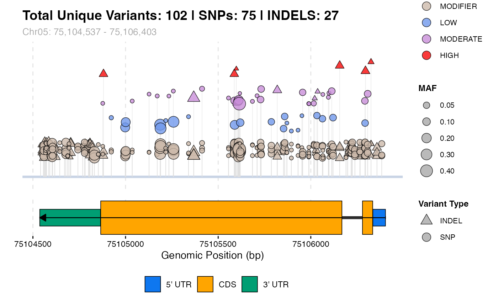

Generate a combined gene model and variant hotspot overlay plot (local)
Source:R/variant_discovery.R
hotspot_overlay_plot.RdGenerates a vertically stacked visualization aligning a structural gene model with its corresponding regional variant hotspots.
Usage
hotspot_overlay_plot(
gene_name,
gff_path,
annotations_df,
genotypes_df,
selected_variants = NULL,
text_sz = 2.5
)Arguments
- gene_name
A character string indicating the Sobic ID of the candidate gene.
- gff_path
A character string specifying the path to the GFF3 file.
- annotations_df
A data frame containing variant annotations for the region.
- genotypes_df
A data frame containing variant genotypes for the region.
- selected_variants
An optional character vector of specific `variant_id`s to highlight on the plot with vertical lines, enlarged points, and labels.
- text_sz
A numeric value for specifying text size for selected variants.
Examples
# \donttest{
library(panGenomeBreedr)
# 1. Define parameters
gff_path <- "https://raw.githubusercontent.com/awkena/panGB/main/Sbicolor_730_v5.1.gene.gff3.gz"
gene <- "Sobic.005G213600"
# Fetch data for the gene region
ann_df <- fetch_table_region(
table_name = "annotations",
chrom = "Chr05", start = 75104537, end = 75106403,
connect_db_mode = 'online'
)
geno_df <- fetch_table_region(
table_name = "genotypes",
chrom = "Chr05", start = 75104537, end = 75106403,
connect_db_mode = 'online'
)
# Generate and display the plot
if (nrow(ann_df) > 0 && nrow(geno_df) > 0) {
hotspot_overlay_plot(
gene_name = gene, gff_path = gff_path,
annotations_df = ann_df, genotypes_df = geno_df
)
}

# }